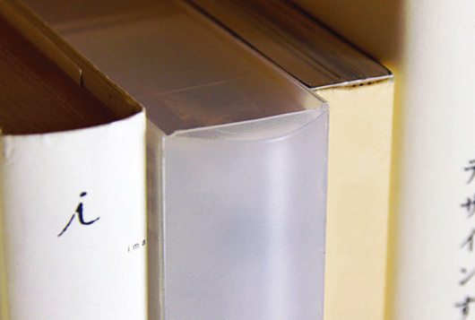
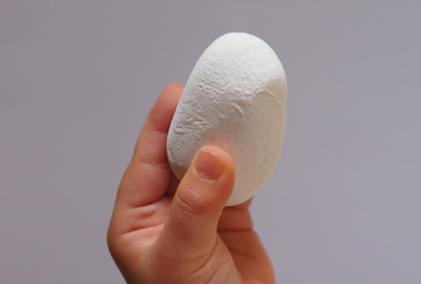

“收纳书”
MUJI AWARD 04以“生活中的恒久设计”（Long Lasting Design for Living）为主题，希望学习先人的智慧，观察现代的生活，从崭新的视角发现未来10年、50年、100年后仍将持续存在的设计。最后收到了4,824份参赛作品。
4月26日，无印良品（MUJI）在上海万科中心举行了颁奖典礼。金奖的设计有两个，分别是：叶智泉的“收纳书”和小高浩平（日本）的“小石子粉笔”。从后续的报道来看，当时评委对这两个作品争执不休，最后决定并列金奖。（好中国的处理办法：）在我看来，“收纳书”的设计智慧绝对不是收纳小物品那么简单，它与信息分类整理有着诸多关联。
在说信息整理前，让我们先来看看这个金奖设计：
收纳书 作者名：叶智泉 (现居香港)

将物件归类的习惯，已经成为了生活的一部份，但我们有时会碰到无法决定物件收纳位置的情况。如果将收纳盒作成书的形状，就可以简单的决定收纳盒的放置位置了。结合无印良品的收纳盒和一般的书本的形状，书脊上可以写下物件的类别。「收纳书」和书本一起排列在书架上，但其和书架上的书本不同，有着收纳的功能。
我们拆解一下设计过程，大概是：
- 设计师从一个问题出发：有时会碰到无法决定物件收纳位置的情况。
- 引发了一个关于书的联想：图书馆或者家中的书可以分类码放，期刊可以按日期，图书可以按类别。同样很重要的是大多数书开本都差不多，给收纳带来了诸多便利。
- 可行性：无印良品原来就有收纳盒的品类，只要结合书本形状进行再设计就可以。
- 完善：书脊上可以写下物件的类别，像书名一样利于识别。「收纳书」排列在书架上，有着收纳的功能。
信息整理
我相信如果我当时是评委，也会被这个设计深深打动，特别是契合之前无印良品再设计（Re-design）的思路。那这究竟与信息整理有什么关系呢？
有一种说法认为我们有时候记不住东西，并不是因为“忘了”，而是没有从记忆中建立有效的索引。换句话说它（信息）就在你大脑的仓库中，但你不知道放在哪儿了。
“收纳书”的设计给我们提供了一个整理信息（知识）的思路：标准化，分类，打标签，存储<->检索。
其中标准化和分类的过程是指将不同类别的信息建立一种结构，同类型的堆到一起，比如，笑话类的归笑话，商业类的归商业，后者又可以进一步分类，是关于怎么找钱的，还是怎么找人的，还是怎么营销的。这个过程很重要，像找衣服一样，如果把衣服早分成春，夏，秋，冬的类别，以后找一个夏天穿的衣服可以只从夏天分类里“检索”。
标准化，分类后要给信息（知识）打标签，这个标签是为了综合定位用，比如有一天读了个小明关于为什么要经常写博客的文章，提到常写可以有A，B，C等好处，就可以自动在心里打上“写作”“博客”“知识分类”“小明”“A”“B”“C”等标签，以后检索的时候通过两三个标签就可以定位到这个文章，无论是从大脑中还是通过互联网上。这和认路的过程其实很像，我们有时候定位一个地方，会看它的特征和周边有什么，比如它是个白色的顶上有个天线的高楼，南面是个购物中心，北面是个麦当劳。
对物品的收纳和对信息的收纳何其相似！
另一个金奖
另一个金奖设计充满了童真，并没有那么实用，但估计是触碰到了一群中年男设计师（俗称“老男人”）对儿时的回忆，算是用情感打败了他们。
小石子粉笔 作者名：小高浩平 (现居日本)

小石头造型的粉笔。
小时候常用小石头涂鸦玩耍。
希望涂鸦时的这份愉快感，以及安心感，可以一直延续下去。
这些设计似乎看起来很“平淡”，似乎可以找到套路。但我时常想两个问题：
一个是知道套路和能设计出好东西是什么关系？就像以前武侠中一群人总喜欢抢本秘籍或者神器，武林秘籍和练成好武功是什么关系？
另一个是为什么有那么多好的设计在商业上并没有推广开？像是有个关于瓶盖的设计，可以解决女生难拧瓶盖的问题，为什么没有被大规模采用？
(图片来源： http://award.muji.net/)
欢迎大家共同探讨信息分类，管理的方法。